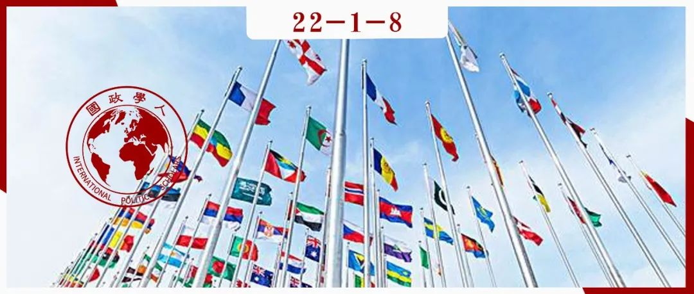

收录于合集 #《国际关系前沿》2022年第1期 23个

作品简介
作者 ： Gisela Hirschmann，莱顿大学助理教授，主要研究领域为国际关系、国际组织的合法性与多边维和。
编译 ： 池佳曈（国政学人编译员，吉林大学行政学院）
来源 ： Hirschmann, G. (2021). International organizations’ responses to member state contestation: from inertia to resilience. International Affairs , 97(6), 1963-1981. https://doi.org/10.1093/ia/iiab169
归档 ： 《国际关系前沿》2022年第1期，总第40期。

摘要 ****
国际组织在促进关键国际性问题的多边合作方面发挥了至关重要的作用，然而其权威性却因成员国削减财政捐款甚至放弃成员国资格等行为而受到削弱。对于国际组织如何进行回应，现有文献大多聚焦其他成员国的反应，本文则认为对于国际组织官僚机构的分析同样必不可少。文章归纳了官僚机构应对的三种类型，即惯性、适应与建立弹性。作者选取联合国人口基金会进行案例研究，分析其对于里根、小布什与特朗普政府削减预算的反应，并进一步提出在解释国际组织应对争议时，国际组织的威胁认知、其他成员国的地位与官僚的领导均应纳入考虑范围。
编译
文章指出，为评估国际组织面临危机的程度，需要了解国际组织如何应对存在性危机。现有文献大多聚焦其他成员国的反应，本文则认为 对于国际组织官僚机构的分析同样必不可少。文章归纳官僚机构应对的三种类型，即惯性（inertia）、适应（adaptation）与建立弹性（resilience- building）。 作者认为每种反应都是国际组织官僚机构采取特定行动所造成的，官僚组织的自主性对于国际组织的存续十分重要。
文章以联合国人口基金会（UNFPA）为例，研究其在1985-1992、2002-2007、2017-2020三个时期对于争议的应对，分析了其官僚机构的具体活动是如何帮助这一初期几乎没有自主性的小型组织应对存在性危机并增强弹性的。 研究表明，组织的威胁认知、其他成员国的地位和官僚的领导均为解释因素。
文章第一部分制定概念框架以分析官僚机构对于成员国质疑的回应，第二部分基于半结构化访谈与档案材料分析联合国人口基金会如何应对三次以削减预算为表现形式的质疑，第三部分讨论了基于国际组织研究与国际关系理论的潜在相关变量，最后得出研究结果对当前与未来国际组织研究的影响。
01
国际组织官僚机构对于成员国质疑的回应
（一）概念阐释
**
**
文章假设国际组织是自主行为体，因此在当前多边秩序中国际组织具备保持其地位的固有利益。面对成员国的质疑，国际组织进行回应的方式有所不同。根据组织理论，作者提出三种类型的回应方式： 惯性、适应与建立弹性。
本文将 “惯性” 定义为对成员国争议的“不干预模式”。国际组织不予回应可能是一种战略决策，也可能意味着忽视挑战与坚持原有路线。 “适应” 基于委托- 代理（principal–agent）的理论假设，认为国际组织作为成员国的代理，应努力满足委托者的要求。为维持成员国的支持，国际组织改变其政策，旨在避免争论状态的进一步升级，通过谈判与议题框定（framing）塑造适应能力。 “建立弹性” 指国际组织官僚机构发展组织能力以限制成员国争论。此类反应建立在组织自主理论基础上，认为国际组织能够使自身免受成员国控制。在缺乏正式执行权的情况下，羞辱（shaming）成员国是相当普遍的做法。此外，官僚机构与其他组织、非国家行为体和立场相近的成员国建立联盟以对抗竞争国家。最后，官僚机构通过管理专业化建立弹性。
（二）研究设计与方法
削减预算是成员国对于多边合作表示反对的一种有效方式，极大地挑战国际组织的存在。文章选取UNFPA作为分析案例，研究官僚机构对于成员国争议的反应。如表1所示，UNFPA曾三次面临美国政府的预算削减，分别是在里根执政时期、小布什执政时期和特朗普执政时期。
表1
美国政府第一次削减预算时，UNFPA规模较小且成立时间较短，几乎没有官僚机构自主权。选取这一时期的UNFPA作为研究对象所得出的结论通常能够适用于规模更大、自主性更强的国际组织。
02
联合国人口基金会的回应：在全球人口政治中恢复弹性的步骤
UNFPA创建于全球人口广泛增长时期，旨在通过自愿计划生育支持政府制定人口政策。早期，美国政府为UNFPA的总体预算贡献了最大的份额，然而这一状况在20世纪80年代发生了变化。
（一）里根政府时期（1985-1992）
里根政府与前几届政府对于全球人口政策的支持背道而驰，1984年在墨西哥举行的国际人口会议上，美国代表宣布了墨西哥城政策，即美国政府需要在进行捐助之前确保UNFPA不会为堕胎与强制性计划生育项目提供资金。这一声明促成了美国与UNFPA关系的根本性转变，从而对该组织的财政基础产生了重大影响。UNFPA工作人员表示，预算削减是对该组织的重大威胁，因此领导层试图说服美国改变其立场。1987年UNFPA领导层发生变动后，该组织对筹款活动的专业化关注程度日益提高，并设法将其他捐赠者的捐款增加了一倍。通过将注意力转移到其他捐助国，这一新的筹资战略为资源多样化提供了基础。惯性和适应是初期两种主要的反应，在领导层发生变化后，官僚机构越来越多地进行建立弹性的活动。
（二）小布什政府时期（2002-2007）
小布什政府执政时期争议再度出现，美国要求UNFPA在单独账户中管理美国资金。虽然资金削减力度较大，但美国作为捐助者的作用已发生了重大变化。2000年，美国已成为第七大捐助者。在组织内部，由于资金捐助的削减，UNFPA的高级职位不再向美国开放。同时，其他成员国对于UNFPA的支持率也在增加，成员国之中形成了新的共识。此外，UNFPA在游说活动通信专业化方面加大力度，与民间社会活动者、私人行为体建立联盟，促使筹资活动多样化。总之，小布什执政时期预算削减后，UNFPA在多个层面上建立了弹性。
（三）特朗普政府时期（2017-2020）
除削减资金捐助外，特朗普政府还要求联合国从其应对新冠肺炎的人道主义反应计划中删除关于生殖健康的内容。从UNFPA的角度看，美国政府的预算削减已经从对该组织的重大冲击转变为更稳定的挑战。在美国政府宣布削减开支之前，UNFPA的领导层就已经获得了其他重要捐助国的支持。除了早期与其他捐助国的协调外，UNFPA总部还专注于与民间社会组织和私人行动者建立强大的网络，这伴随着其内部官僚机构的显著专业化。通过专业化的筹款和沟通活动，以及通过建立新的制度渠道获取多样化的资源，该组织已经建立了显著的弹性。
总而言之，UNFPA对预算削减的反应已经从初期的退缩和谈判转向了显著的建立弹性。经过最初的惯性和适应，UNFPA总部开始使其他捐助者之间的沟通和筹款专业化。当布什政府削减捐款时，UNFPA领导层获得了其他成员国的支持，并共同努力使美国为削减捐款而蒙羞。此外，官僚机构参与和国内公民社会行动者建立联盟，并通过在华盛顿和布鲁塞尔的办事处使其游说活动专业化，这导致UNFPA的资金基础更加多样化。最后，由于预见特朗普政府的预算削减，UNFPA的领导层在其宣布之前已经获得了其他捐助国政府的支持。作为回应，UNFPA强调了其在人道主义背景下的工作，使其工作在更广泛的公众中合法化。UNFPA专注于建立联盟以及探索在总部一级和通过外地办事处使捐助国以外的财政资源多样化的新渠道。
03
探索官僚机构回应的多样性
实证分析揭示了三个与理论化的争议反应相关的因素。首先， 威胁感知的改变与建立弹性活动的显著增加相对应， UNFPA关于美国预算削减对该组织构成的严重威胁的看法已经随着时间的推移而改变。第二个因素是 其他成员国的立场 。与墨西哥城会议期间相比，小布什与特朗普执政期间各成员国对于UNFPA的立场更加一致。如果其他成员国的看法存在分歧，惯性更有可能发生。当各成员国团结一致时，适应和建立弹性更易形成。最后， UNFPA 官僚机构对于争论反应的变化与该组织执行领导层的变化相一 致 。
04
结论
本文旨在更深入地提供对国际组织官僚机构对成员国争论的制度反应的理解。作者利用组织研究，总结了国际组织官僚机构应对争论的三种方式，即惯性、适应与建立弹性。作者选取UNFPA进行案例研究，分析表明即使是一个几乎没有自治权的国际组织的官僚机构也可以参与活动。对于不同时期应对方式的比较也进一步证实了历史制度主义的价值，国际组织为应对挑战而建立的新制度决定了其对于后续挑战的反应。同时，UNFPA的例子表明国际组织的任务不仅可以由技术导向转向高度政治化的议题，也对于塑造应对挑战的可能性至关重要。
译者评述
目前，国际组织正面临着来自社会与成员国越来越大的阻力，英国脱欧、美国政府削减对于国际组织的资助即为例子。为评估国际组织面临的危机的程度，需要了解国际组织如何应对存在性危机。文章认为对于国际组织官僚机构的分析同样必不可少，并将其归纳为三种类型，即惯性、适应与建立弹性。作者选取联合国人口基金会作为案例，通过分析里根政府时期、小布什政府时期与特朗普政府时期UNFPA面对美国缩减预算所采取的具体措施并将其进行比较，将这一过程概括为从惯性到建立弹性。文章的第三部分总结了三个影响官僚机构回应方式的因素，即威胁感知、其他成员国的立场与领导层的变化。文章理论框架完整、实证分析层面论证完备，对于现今一些面临成员国质疑与挑战的国际组织提供了多种解决方案，具备一定的现实意义。同时，文章也对未来国际组织存续的研究提出了一系列问题。基于当前对于国际组织消亡的研究，我们仍需要更系统地了解削减预算作为成员国对国际组织提出质疑的手段如何影响国际组织的存在，以及其有何种制约因素。基于对国际组织回应的预期，未来的研究更应注重何种制度变迁在确保国际组织的存续方面发挥最重要的作用，这对于理解国际组织的生命周期以及官僚机构在其中的作用是必不可少的。
词汇整理
联合国人口基金会 United Nations Population Fund
委托-代理 ****Principal–agent
**议题框定 **Framing
惯性 Inertia ****
适应 Adaptation
建立弹性 Resilience-building
审校 | 石稚瑄 孟晓宇
排版 | 云琪布日 黄伊蕾
文章观点不代表本平台观点，本平台评译分享的文章均出于专业学习之用, 不以任何盈利为目的，内容主要呈现对原文的介绍，原文内容请通过各高校购买的数据库自行下载。

国政学人
支持学术公益与知识传播
微信扫一扫赞赏作者 __赞赏
已喜欢，对作者说句悄悄话
取消 __
发送给作者
发送
最多40字，当前共字
上一页 1/3 下一页
长按二维码向我转账
支持学术公益与知识传播
受苹果公司新规定影响，微信 iOS 版的赞赏功能被关闭，可通过二维码转账支持公众号。